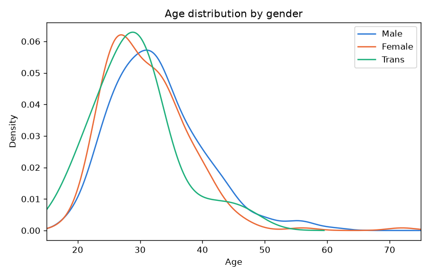
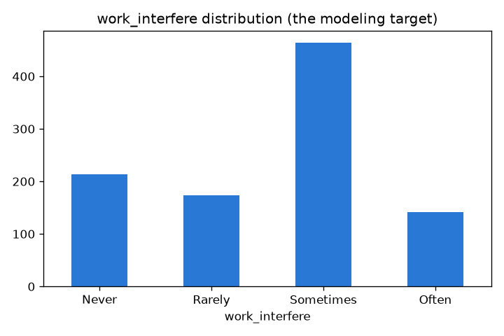
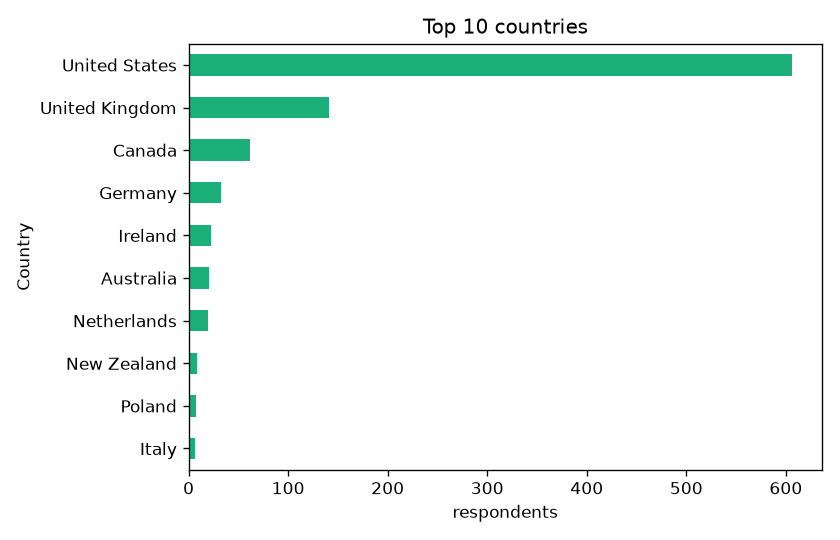
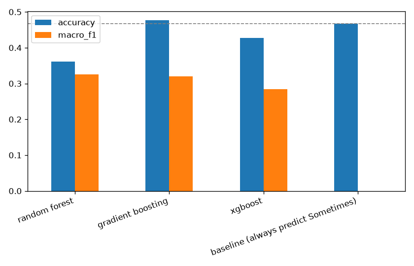
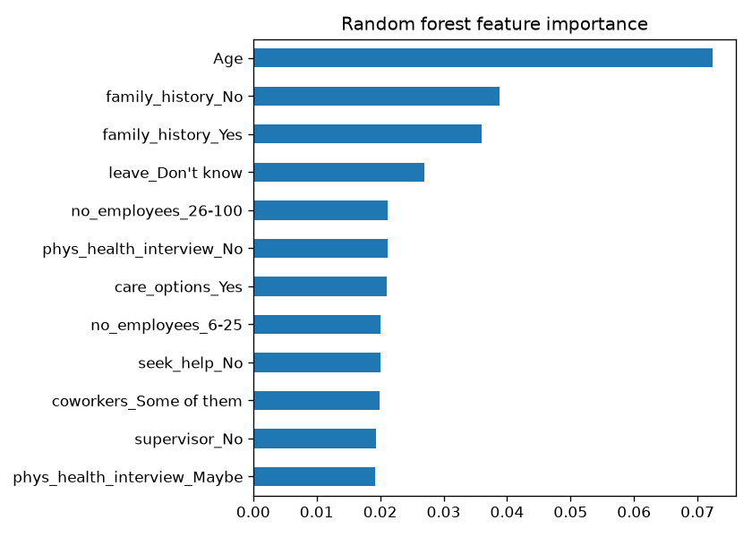
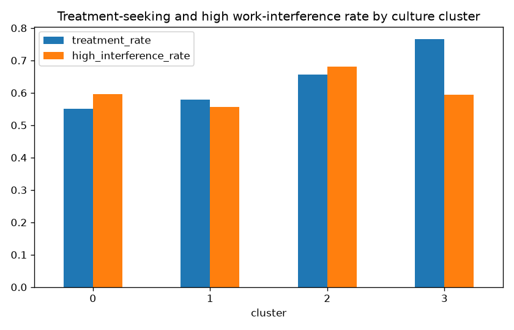
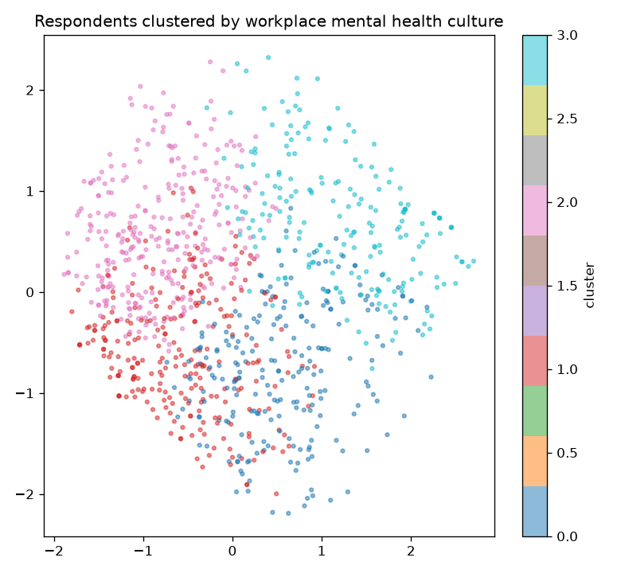

Mental Health in Tech: Predicting Work Interference
The OSMI 2014 "Mental Health in Tech" survey, 992 respondents after cleaning. Cleaning and EDA, statistical testing, feature engineering, and modeling with random forest, gradient boosting, and XGBoost, checked against an actual majority-class baseline so "nearly 50% accurate" means something.
The data



Testing the EDA charts formally
Grouped bar charts of treatment rate by remote-work status and by tech-company status both look like they show treatment scaling with severity of work interference. Chi-square tests check whether that visual read holds up.
| Factor | chi2 | p-value | Significant? |
|---|---|---|---|
| remote_work | 2.92 | 0.404 | No |
| tech_company | 3.30 | 0.347 | No |
| no_employees | 23.19 | 0.080 | No |
| Gender | 18.59 | 0.005 | Yes |
| family_history | 83.46 | <0.0001 | Yes |
Family history and treatment-seeking specifically: 49.3% of respondents without a family history seek treatment, versus 80.9% of those with one (chi2 = 104.91, p < 0.0001).
A subtle mutual-information bug, caught and fixed
Computing mutual information the naive way (scikit-learn's default,
which treats every column as continuous) put a single feature,
CountryGroup_Poland, at the very top of the ranking. It
turned out to have exactly 7 respondents in the whole dataset,
the k-nearest-neighbors estimator behind the default is known to be
unstable on very sparse binary columns. Every feature here actually
is a binary 0/1 dummy (or genuinely numeric, only Age), so passing
discrete_features=True fixed it.
Modeling against an actual baseline
XGBoost is configured with num_class set to match
`work_interfere`'s actual 4 levels. The more important step is
computing a majority-class baseline, since "nearly 50% accurate"
only means something once you know what a naive guess scores.
| Model | Accuracy | Macro-F1 |
|---|---|---|
| Baseline (always predict "Sometimes") | 46.7% | 0.000 |
| Random forest (balanced class weights) | 36.2% | 0.325 |
| Gradient boosting | 47.7% | 0.320 |
| XGBoost | 42.7% | 0.285 |


Clustering by workplace culture
Grouping respondents purely by how they described their workplace's mental health culture (benefits, care options, leave difficulty, whether coworkers/supervisors feel safe to talk to), no work_interfere or treatment label involved, checked against real rates afterward.


A workplace's described culture predicts treatment-seeking somewhat better (a real 21-point spread) than it predicts work interference specifically (a smaller 12-point spread), consistent with how modest the supervised models' performance on `work_interfere` turned out to be.
Key findings
- Two EDA charts that look like they show a relationship don't survive a formal test. remote_work (p = 0.404) and tech_company (p = 0.347) show no real association with work_interfere.
- A sparse one-hot column (7 respondents) broke the naive mutual information ranking, fixed by telling the estimator its inputs are discrete, not continuous.
- "Nearly 50% accurate" turned out to mean "close to the majority-class baseline." Gradient boosting barely beats it, random forest and XGBoost fall below it on raw accuracy.
- Family history remains the strongest, most reliable signal in every test used here, chi-square, mutual information, and random forest importance all agree on it.
- Workplace culture clustering predicts treatment-seeking better than work interference, a 21-point spread versus a 12-point spread across the same 4 clusters.
Future work
- Try modeling `treatment` (binary, better balanced) as a second, easier target for direct comparison against the 4-class `work_interfere` result.
- Bring in a proper ordinal classification approach (ordinal logistic regression, or an ordinal loss function) rather than treating the 4 work-interference levels as unordered classes.
- A productivity-loss calculation and an H2O AutoML pass are natural next notebooks, not covered here.